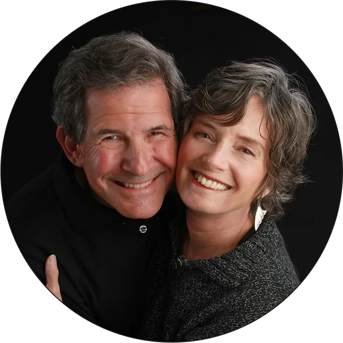

Spiritual growth & emotional awareness with Gary Zukav
Authentic
Power
Align your personality with your soul — one choice at a time.
A calm, guided space to recognize your emotions as messages from the soul and choose from love instead of fear. No rush. No perfection.
Do you want…
meaning& purpose creativity& health joy & lovein your life
The experience
These are experiences of Authentic Power
The alignment of your personality and soul.
A new consciousness
The emerging global consciousness offers the potential of authentic power.
A power based on compassion and wisdom.
It calls you to act from love rather than fear. It connects you to the seat of your soul — the place of purpose, fulfillment and joy.
Join Gary — Live
A live event with Gary Zukav and the energy of Linda Francis is a profound, life-changing experience.
Accelerate your personal journey into evolutionary spiritual growth today, and become the creator of your life!
Are you ready?
Read the Legendary Books that Revolutionized Self-Transformation
Follow your spiritual path
The path of authentic power
Four practices to align your personality with your soul.


Soul to Soul Community
If you are ready to create a life of connection, meaning, and fulfillment.
Begin your transformational journey into freedom, joy, and love.
Decades of teaching
A work that has reached the world.
(testimonials)
Stories from our community

“The Seat of the Soul changed the way I see myself. It changed the way I view the world.”

“The Seat of the Soul is a very important book to me.”

“This is an opportunity. This is a soul agreement. This is a moment for me to level up and learn something.”

“His teachings have supported millions of people for decades now, transforming their perspective and way of being in the world.”

“The intrepid, daring Gary Zukav tells the hard truths.”

“If you’re feeling confused, this is going to give you a lot of clarity.”

“A powerful reminder that we’re all connected.”

“There are two books that I absolutely live my life by. This is one of them.”
@gary_zukav · Instagram
Latest from the feed
Fresh reflections and reminders — straight from Gary’s Instagram.
✶ Mockup · example dataThe Founders
Gary & Linda
We've spent more than 25 years experimenting with our lives together as spiritual partners and sharing our experiments with the world.

Soul Feed · Blog
Wisdom for your journey
Soul Snacks and Soul Feasts — short reflections and longer reads to support your path to Authentic Power.